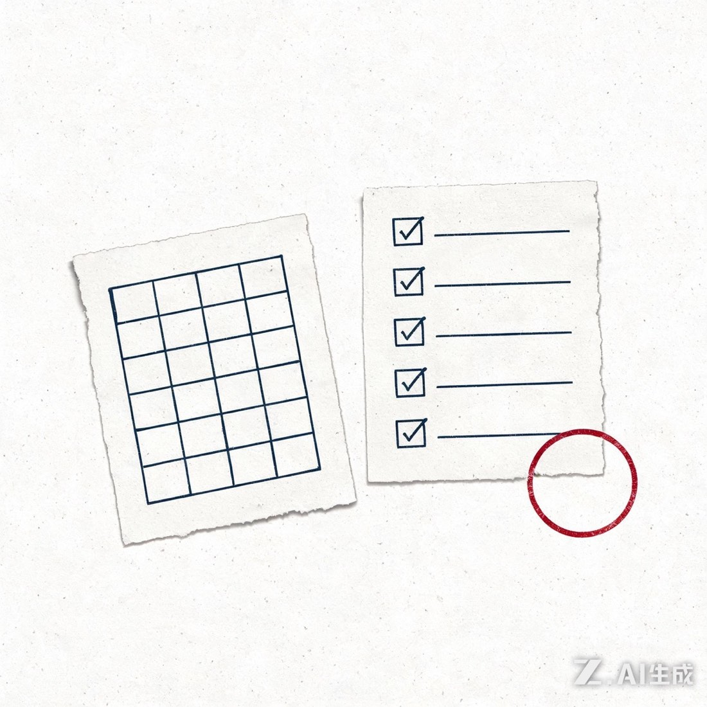

第二张课表之困
当年轻一代开始
重写自己的专业边界
从高校培养方案到招聘启事，
一张课表之外，他们还要补上什么？
引子
本章回答：谁在跨出新传，谁又走进来？这些选择依据什么材料被看见？
周五，凌晨两点。
人物与工时：4位跨界者的深度访谈（模拟叙事）；高校与岗位信息：公开文件及招聘原文。
北大外院乌尔都语专业的沈若宁还在宿舍导出FLIC课程要求的采编视频，笔记本风扇转得像拖拉机。
她不是一个人。
2025年5月，北大外院公布FLIC项目录取名单（FLIC录取公示）；一周后，新传学院公示“国际传播与国际金融”拟录取名单（金融拟录取公示）。一边有人走进新传，一边有人跨出去。
人大新闻学院的陈思琪在都市报实习两个月后，转头去统计学院蹭计量经济学，想跨向互联网数据分析。
两扇门打开了，
名额却没有填满
北大两项跨界项目 · 计划人数与公示人数
怎么读 每格代表一个计划名额，填色格为公示录取或拟录取人数；轻触每行查看口径。
来源：FLIC 2024 公示、FLIC 2025 公示、国际金融 2025 公示。每格代表一个计划名额。
图中发现 三次公示人数均低于计划；这不是报名人数，也不能据此计算录取率。
门槛写在简章里：成绩排名、不可修双学位、异地学习（FLIC2025简章、金融2025简章）。下面用招聘、课程与时间三组数据追问：第二张课表究竟补上了什么？
誓言下的出走
本章回答：招聘启事要求什么，原有的新传本领还够用吗？
“铁肩担道义，妙手著文章。”培养方案许诺的，是“具有深厚人文素养、敏锐新闻判断与全媒体生产能力的复合型人才”。
出了校门，招聘方递来的却是另一张清单。
招聘方要的是否还是这些？我们逐字编码了53条招聘启事，覆盖新华社、人民网等中央媒体，财新、澎湃、21世纪经济报道等市场化媒体，以及字节、腾讯、快手、百度等互联网大厂。其中，21世纪经济报道的2027届校招记者岗写着“经济、管理、理工科等相关专业优先”，没有提及新闻专业（21世纪经济报道记者岗JD）。
三类雇主，三张清单
53条招聘启事中，哪些技能被直接点名？
怎么读 直接比较同一行的提及率；悬停、聚焦或轻触色条，读取条数与对应岗位原句。
新闻采编与判断：央媒73%、市场化媒体61%、互联网0%。数据分析与指标：7%、28%、85%。AI工具与大模型：7%、6%、65%。
来源：53条招聘启事编码。中央媒体15条、市场化媒体18条、互联网20条（内容与数据分析各10条）。比例＝提及该技能的岗位数 / 该组岗位数。
查看完整技能数据
| 技能 | 中央媒体 /15 | 市场化媒体 /18 | 互联网 /20 | 内容岗 /10 | 数分岗 /10 |
|---|---|---|---|---|---|
| 写作表达 | 13 | 15 | 8 | 5 | 3 |
| 新闻采编与判断 | 11 | 11 | 0 | 0 | 0 |
| 选题策划 | 13 | 13 | 8 | 8 | 0 |
| 视频与视听制作 | 12 | 8 | 6 | 5 | 1 |
| 平台与账号运营 | 9 | 9 | 13 | 9 | 4 |
| 外语 | 11 | 5 | 3 | 0 | 3 |
| 财经与商业知识 | 2 | 11 | 4 | 0 | 4 |
| 用户与传播效果 | 3 | 4 | 16 | 7 | 9 |
| 视觉与设计 | 5 | 5 | 5 | 1 | 4 |
| 数据分析与指标 | 1 | 5 | 17 | 7 | 10 |
| 编程与数据工具 | 0 | 2 | 7 | 1 | 6 |
| AI工具与大模型 | 1 | 1 | 13 | 7 | 6 |
| 沟通协作（通用） | 8 | 9 | 16 | 9 | 7 |
图中发现 在本样本中，互联网对数据与AI的点名明显多于两类媒体。
查阅 53 条招聘启事与原文
要跨出或跨进新闻传播，至少有四条制度路径：辅修需额外修读1—2年晚间与周末，跨考硕士则要2.5—3年。
离开原专业，
有多远的路要走？
怎么读 横向看修读要求与凭证；轻触路径读取其区别，学分仅在各项目口径内比较。
荣誉课程包
15 学分从一组跨学科课程开始
拓宽主修边界
辅修证书 / 学位
25–40 学分进入另一张培养方案
占用晚间与周末
联合培养项目
跨院 / 异地语言、传播与金融交叉
学分及凭证按项目规定
跨专业考研
更换最高学历从本科走向另一专业
重新进入完整培养周期
课程包与辅修学分分别取自人大、中传公开文件；联合项目见北大招生简章。
图中发现 “跨界”有不同制度入口，修课与更换最高学历不是同一种结果。
而人民日报社2025年招聘公告写明“专业条件按最高学历对应专业把握”。在资格审查面前，本科辅修只是一行附注，跨考硕士才换得掉“最高学历”。
我是跨界人，
还是局外人？
本章回答：第二张课表能补上哪些能力，又跨不过哪些资格门槛？
高校说修读者是“复合型跨学科人才”；网申机筛时，用人单位却可能说“主修专业代码不符”。
中央媒体的专业要求多按学科代码列示（见招聘原文），一张辅修学位因此对跨进来的学生格外有吸引力。
把两校43门课程与53条招聘启事逐一比对，错位出现了：课表补得最足的写作、采编与视频，主要对接中央媒体；互联网点名最多的数据分析与AI工具，在课程名称中很少出现。中传辅修未见统计建模、Python编程、数据库或机器学习的独立设课（中传新闻学辅修简章）；北大FLIC同样没有一门以数据、编程或AI命名（FLIC2024简章）。
16学分必修，
“数据”占据了哪一角？
中国传媒大学新闻学辅修 · 2025年必修课程
怎么读 面积按学分分配；轻触6、6、4三个区块，查看课程名称与学时。
数据与数字新闻 · 4学分
数据新闻报道概论 · 2学分 / 32学时
数字新闻学原理 · 2学分 / 32学时
来源：中传2025年辅修招生简章及教学计划；按课程名称归类，每一学分对应图中等量面积。
翻阅两校 43 门课程
下载课程底表 CSV图中发现 数据与数字新闻共4/16学分；课程名称不能证明实际教授了哪些技术。
一位修过《数据新闻报道概论》的中传数媒技术专业学生说：“技术上太浅了，就是去公开网站找数据做现成图表，跟我们本专业写的Python爬虫完全不在一个量级。”
跨出新传，则是另一道墙。
北大“国际传播与国际金融”项目“不另收学费”，但深圳与英国两段异地学习的住宿、生活、交通与保险费用由学生自理（金融2025简章）。
周复一周
本章回答：主修之外的学习，怎样挤进一周的时间？
推开门只是开始。我们请4位跨界者记下主修之外，每周还要额外投入多少小时。
课表之外，
每周还要交出多少小时？
4位跨界者 · 每人每周主修之外的额外投入
怎么读 一根柱子是一个人；柱长使用同一小时尺度（满格24小时），轻触查看其路径与口径。
来源：4位跨界者的深度访谈（模拟叙事），工时为受访者自述；第四位受访者未给出具体小时数，按人物叙述整理。
图中发现 给出工时的三位受访者，每周额外投入都在14小时以上；4人的叙述不代表总体分布。
柱子背后，是具体的晚间与周末。
点开他们的一周
怎么读 先选人物，再选课程阶段；卡片显示主修与跨界学习如何交替。拖动滑杆，条目按时间逐条出现。
沈若宁
北大外院乌尔都语 · FLIC项目
14小时 / 周
阅读三人的完整周记
沈若宁（北大外院乌尔都语｜FLIC项目｜周投入14小时）
周一至周四白天：背诵乌尔都语字母、研读南亚文学史，跨过专业成绩前50%的报名门槛后，继续应对主修的学业要求。（“外语人现在特别焦虑，如果不修FLIC，毕业简历上除了专四专八几乎啥也没有。”）
周五傍晚至周六全天：完成《中国文化走出去实践课》硬性要求的5个采编视频作品——扛着三脚架满校园找留学生采访，回来自己写英文脚本、配音、剪辑。（“好几个周五晚上为了赶周六早上的作业截止时间，在宿舍导出4K成片到凌晨两点半，笔记本风扇转得像拖拉机，吵得室友直翻身，心里特别愧疚。”）
叶书桓（北师大传播学＋人工智能双学士｜官方集成课表｜周投入20小时）
周二上午08:00：在文科楼听传播学老师讲拉扎斯菲尔德和媒介环境学，沉浸在阅读量与论文思辨里。（“刚进入文科的哲学语境，脑子还没转过来。”）
周二下午13:30至晚间：冲去机房对着高等数学、线性代数和Python数据结构发呆，屏幕上一整片红色报错。（“学校等于用502胶水把两张课表硬焊死在一起。我们班有好几个高考偏文科的同学，大一上学期就被微积分和Python虐哭了好几次。”）
陈思琪（人大新闻学｜野路子跨出大厂数分｜周投入18小时）
周一至周五白天：应付新闻主修课，推掉已经联系好的央媒日常实习，每天晚上在明德楼图书馆坐到闭馆。（“带教老师问我怎么不来了，我只能撒谎说家里有事，其实心里虚得要命。”）
周末全天至深夜：去经院和统计学院蹭计量经济学，在图书馆刷LeetCode SQL窗口函数与A/B测试归因题。（“高数期中只考了38分，最后挂科重修，那阵子焦虑到枕头上全是头发。”）
来源：4位跨界者深度访谈中的三位人物叙事（模拟叙事）；插画仅作视觉呈现。
图中发现 第二张课表占用的是具体晚间与周末；三人的叙事不代表总体分布。
一周168小时，循环往复：
周三晚上辅修下课十点。
周五晚上导视频到凌晨两点半。
周六早上八点坐在三教写新闻评论。
周日深夜盯着报错的Python窗口掉眼泪。
周一早八点继续坐在主修教室里。
第一张课表，
也会迎来清晨吗？
本章回答：制度正在怎样变化，跨界还要支付哪些成本？
制度也在变：过去三年，北京五校把跨学科入口写进了文件。
第二张课表，
正在写进制度
2023—2025年 · 北京五校跨学科入口
怎么读 筛选年份后展开项目，核对准入条件、修读方式与结业凭证。
2023清华大学新闻学辅修学位
- 准入与修读
- 按校内辅修培养机制修读
- 结业凭证
- 辅修学位
2024北京师范大学传播学＋人工智能（双学位）
- 准入与修读
- 获批双学士学位项目，联合培养
- 结业凭证
- 双学士学位
2024中国传媒大学传播学（智能与计算传播）
- 准入与修读
- 主修专业下调整设立的新方向
- 结业凭证
- 主修毕业/学位
2024—2025北京大学外国语言与国际传播 FLIC
- 准入与修读
- 限外院，排名前50%，未修双学位；计划20人
- 结业凭证
- 联合项目荣誉证书
2025北京大学国际传播与国际金融
- 准入与修读
- 限新传及元培新传，不可退出/修双学位；约15人
- 结业凭证
- 跨学科联合培养证书
2025中国传媒大学新闻学辅修
- 准入与修读
- 限非新传类本校生，必修全及格；计划150人
- 结业凭证
- 辅修学位（注明）或证书
2025中国人民大学全校专业教育＋荣誉辅修包
- 准入与修读
- 面向全校开放15学分荣誉课程包
- 结业凭证
- 荣誉辅修课程包凭证
点击项目查看准入条件、凭证与官方文件。
图中发现 2023—2025年公开文件显示，跨学科入口从辅修延伸至双学位与课程包。
高校正把“第二张课表”从学生的自我救济，慢慢纳入官方的主干设计。
但制度的善意落到账单上，仍有摩擦。
“不另收学费”之外，
还有多少成本？
切换项目，展开时间、学分与费用清单
怎么读 切换项目读取学分、收费和时间条件；展开下表并排比较。
并排比较三条路径
| 路径与项目 | 学分要求 | 公开课程收费 | 时间与地点 | 互斥与机会成本 |
|---|---|---|---|---|
| 走进新传｜中传辅修 | 学位≥40；证书≥25 | 130元/学分（最低5,200/3,250元） | 周末及周三/周五晚（校内） | 含5学分毕设；主修结束即止 |
| 走进新传｜北大FLIC | 正文30（分项合计28） | 简章未列额外学费 | 校内跨院修读（5个视频实践） | 不可修双学位；报名成绩须居前50% |
| 跨出新传｜北大金融 | 4模块×9周（抵免≤38） | 不另收学费；设专项奖学金 | 9—4月深圳，4—6月英国 | 食宿交通自理；不可退出/双学位 |
来源：中传2025年辅修招生简章、北大FLIC与国际金融2025年简章；各项目原文链接见上方清单。
图中发现 不另收学费不等于没有成本，异地食宿交通、时间与修读限制仍需承担。
摩擦有三重：课程更新慢于岗位对行业知识、数据与AI的要求；能接住周末、学费与异地生活费的，往往是绩点靠前、家庭有托举的学生；而只要资格审查仍按“最高学历对应专业代码”把关，本科跨学科凭证就难以消解学历焦虑。
查阅高校文件与项目资料
三个核心发现
- 岗位要的能力，因雇主而异。53条样本中，互联网数据分析与指标提及率85%，AI工具与大模型65%；两类媒体仍更常点名新闻采编。
- 第二张课表补得上课程，未必补齐岗位要求。两校43门目录中，中传16学分必修有4学分以数据或数字命名；课程名、凭证与最高学历专业资格需要分别判断。
- 跨界入口增加，成本仍落在个人的一周里。4位跨界者中，给出工时的三人每周额外投入14—20小时；公开简章同时列出收费、异地生活及修读限制。
三张课表背后的人
“外语人现在特别焦虑，如果不修FLIC，毕业简历上除了专四专八几乎啥也没有。”
“学校等于用502胶水把两张课表硬焊死在一起。我们班有好几个高考偏文科的同学，大一上学期就被微积分和Python虐哭了好几次。”
“带教老师问我怎么不来了，我只能撒谎说家里有事，其实心里虚得要命。”
引语摘自第三章三人周记；人物来自深度访谈中的模拟叙事，肖像为插画。
拿到证书或附注，并不等于上岸——真正决定去向的长跑，现在才刚刚开始。
“在宿舍导出4K成片到凌晨两点半……心里特别愧疚。”
——沈若宁（北大外院乌尔都语 · FLIC项目）
“刚进入文科的哲学语境，脑子还没转过来。”
——叶书桓（北师大传播学＋人工智能双学士）
“高数期中只考了38分，最后挂科重修，那阵子焦虑到枕头上全是头发。”
——陈思琪（人大新闻学 · 跨向互联网数据分析）